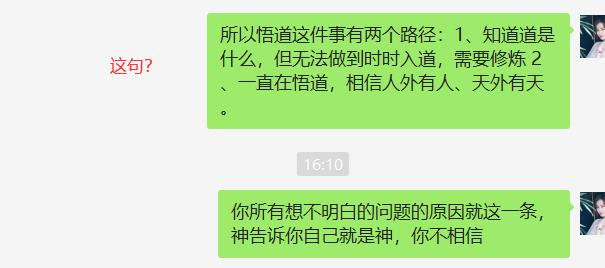

2020-05-06¶
2020-05-06 08:27:02 |
我 |
天津110指挥中心系统升级改造项目和易华录合作，包括8s、8a和RTSync等产品 |
2020-05-06 08:27:15 |
我 |
这个项目你知道吗 |
2020-05-06 08:30:32 |
你 |
不知道呢[坏笑] |
2020-05-06 08:30:35 |
你 |
哈哈 |
2020-05-06 08:31:02 |
我 |
昨天我们开会，销售说的 |
2020-05-06 08:31:07 |
你 |
我刚到公司了 |
2020-05-06 08:31:19 |
我 |
嗯嗯 |
2020-05-06 08:31:41 |
你 |
我最近在看你推荐的那本书 |
2020-05-06 08:31:53 |
我 |
感觉怎么样 |
2020-05-06 08:32:42 |
你 |
很不错 |
2020-05-06 08:33:00 |
你 |
有点像博弈论，也是看待世界的一种眼光 |
2020-05-06 08:33:33 |
我 |
是 |
2020-05-06 08:35:37 |
你 |
我提前跟你说下，我跟李辉的悟道误会解除了 |
2020-05-06 08:35:40 |
你 |
[奸笑] |
2020-05-06 08:36:15 |
你 |
在5月2号的时候，我俩成功的沟通清楚了 |
2020-05-06 08:37:40 |
我 |
太好了，有空和我说说呗 |
2020-05-06 08:38:17 |
你 |
这真的是一个振奋人心的消息 |
2020-05-06 08:38:41 |
我 |
是呀是呀 |
2020-05-06 08:46:16 |
你 |
这个故事得李辉给你面对面的讲 |
2020-05-06 08:46:21 |
你 |
[呲牙] |
2020-05-06 08:46:29 |
你 |
她自己说挺颠覆的 |
2020-05-06 08:46:32 |
我 |
哦，好吧 |
2020-05-06 08:47:12 |
你 |
打字太说不清了 |
2020-05-06 08:47:13 |
我 |
😄 |
2020-05-06 08:47:15 |
你 |
我有预感，我们快要约一次面聊了 |
2020-05-06 08:47:24 |
你 |
那天我俩聊到了快2点 |
2020-05-06 08:47:33 |
我 |
哈哈，好期待呀 |
2020-05-06 08:48:40 |
你 |
是啊。我太高兴了，高兴的我晚上都睡不着 |
2020-05-06 08:48:41 |
我 |
真的呀 |
2020-05-06 08:49:19 |
你 |
真的。李辉开始会用我的思维思考问题了 |
2020-05-06 08:51:16 |
你 |
我俩聊的时候一直在说如果王老师在就好了 |
2020-05-06 08:51:56 |
我 |
[动画表情] |
2020-05-06 08:53:08 |
你 |
一会李辉到公司就得跟你说 |
2020-05-06 09:01:37 |
我 |
好 |
2020-05-06 12:27:02 |
我 |
@纯银V：去年在犬校说过一句话，产品经理的认知进阶有五个等级。 第一个等级是产品体验，对应 1-3 年 PM。 第二个等级是产品架构，对应 3-5 年 PM，怎样将核心模块搭建为产品框架，在这个过程中做到适配性好（适配产品场景与价值），扩展性强，简洁优雅强大，对于未来的迭代进行准确的预判。 第三个等级是产品价值，对应 5-10 年 PM，也就是上一条微博讲的，产品为一整个用户群体创造的，让他们离不开你的价值。 第四个等级是市场逻辑，你对垂直市场运行规律的深刻理解。 第五个等级是隐藏关，前面四级如果都过了，产品做到了千万级的日活，这时怎样应对高复杂度的场景与需求，对产品价值与市场演变进行预判。 我自己只做到了第四级，产品没成功，没机会挑战第五级。 但这里有一件坑爹的事情，即便你做到了第五级，换一个赛道从头来过，因为垂直市场发生了变化，你可能在第四级就仆街了。理解垂直市场的运行规律，这不仅仅是一个能力强弱的问题，能力再强也没可能一年就理解到陌生市场的运行规律，但理解不深刻一定会仆街。 所以我们这个行业啊，能跨两个垂直市场，连战连胜的 PM，恐怕是个位数。找到市场机遇好，自己既理解又擅长的垂直市场，那就是命啊，是命啊，说起来都是眼泪啊。 |
2020-05-06 12:28:35 |
你 |
哈哈 |
2020-05-06 15:42:15 |
我 |
李辉说你讲的啥她都忘了[捂脸] |
2020-05-06 15:42:27 |
我 |
你和我说说都和她讲了啥吧 |
2020-05-06 15:42:33 |
你 |
[奸笑] |
2020-05-06 15:42:36 |
你 |
哈哈 |
2020-05-06 15:44:05 |
你 |
其实最主要的就1条：不是山外有山，人外有人 |
2020-05-06 15:44:51 |
你 |
因为你带的李辉，李辉在这点上的认知跟你一模一样，并且根深蒂固。我是从她悟的道生一开始说的 |
2020-05-06 15:45:55 |
你 |
鹰飞不低，鸡飞不高就是一，是道作用在鹰身上和鸡身上的表现。 |
2020-05-06 15:47:21 |
我 |
是呀 |
2020-05-06 15:47:29 |
你 |
从这个道理推广就知道了佛家第三境界：看山只是山，看水只是水就是要看到道作用在“山”、“水”的那个道。 |
2020-05-06 15:47:45 |
你 |
也就是道生一 |
2020-05-06 15:48:07 |
你 |
就是这些，这些我都跟你说过，没啥跟她说的没跟你说过的 |
2020-05-06 15:48:21 |
我 |
是的 |
2020-05-06 15:48:37 |
你 |
就有一个点我没敢跟你说 |
2020-05-06 15:48:41 |
你 |
我跟你说说 |
2020-05-06 15:48:52 |
你 |
就是关于子女 |
2020-05-06 15:51:13 |
你 |
这一两句话都说不清楚 |
2020-05-06 15:51:15 |
你 |
妈妈呀 |
2020-05-06 15:51:25 |
我 |
不着急，慢慢说 |
2020-05-06 15:52:55 |
你 |
咋说呢 |
2020-05-06 15:58:46 |
你 |
这么说吧，悟道悟的不是各种事物背后的规律，是终极大道，其实就是道，按照道德经里说的，不存在什么道和终极大道，道就是道，顶多叫成大道，但没有什么道和终极大道之分。悟道不是一直悟各种道，是知道道是什么，但要保持时时入道，需要不断修炼自己，不断悟。说白了，道就是一层窗户纸，捅破之后就是练了。但是这层窗户纸分层次，大致就是佛家三境界，每层都有窗户纸。 |
2020-05-06 16:00:49 |
你 |
我跟李辉说就是：你入了窄门，神告诉你你自己就是神，但是你不信 |
2020-05-06 16:01:30 |
你 |
这个我也跟你说过 |
2020-05-06 16:01:53 |
我 |
嗯嗯 |
2020-05-06 16:02:37 |
你 |
到了接近道的层面，有任何心思都会从这条窄缝向外推演出来很多事情，这些事情就是你想不明白，判断不符合道的地方 |
2020-05-06 16:02:44 |
你 |
比如你对子女的放不下 |
2020-05-06 16:05:53 |
你 |
所以悟道这件事有两个路径：1、知道道是什么，但无法做到时时入道，需要修炼 2、一直在悟道，相信人外有人、天外有天。 |
2020-05-06 16:10:56 |
你 |
你所有想不明白的问题的原因就这一条，神告诉你自己就是神，你不相信 |
2020-05-06 16:11:26 |
我 |
前面这些我都同意，最后这句我还是不能同意 |
2020-05-06 16:11:33 |
你 |
哈哈哈哈 |
2020-05-06 16:11:45 |
我 |
不是我不相信 |
2020-05-06 16:11:56 |
你 |
 |
2020-05-06 16:12:07 |
我 |
「 李杰: 你所有想不明白的问题的原因就这一条，神告诉你自己就是神，你不相信 」 - - - - - - - - - - - - - - - 这句 |
2020-05-06 16:12:20 |
你 |
好的 |
2020-05-06 16:13:08 |
我 |
= |
2020-05-06 16:13:26 |
你 |
也是因为这个，你不知道道是什么？虽然你可以已经无数次悟到并且依道行事了。 |
2020-05-06 16:13:43 |
你 |
也是那天我跟你说了，你走太过了，得回来点 |
2020-05-06 16:13:48 |
你 |
矫枉过正了 |
2020-05-06 16:28:17 |
我 |
你说的这些我都知道 |
2020-05-06 16:30:34 |
我 |
我的理解是这样的，我按照我理解的道行事，可是总是会发现有一些偏离的地方，每次偏离以后我就可以悟出新的东西，那么原来的没有悟出新的东西的道是不是终极大道呢？我自己是持怀疑的态度的 |
2020-05-06 16:35:43 |
你 |
嗯嗯。所以我说让你好好读读道德经。道德经讲的跟你这种悟道方式非常不一样。 |
2020-05-06 16:36:07 |
你 |
你这种方式还是盲人摸象 |
2020-05-06 16:36:15 |
我 |
嗯嗯 |
2020-05-06 16:36:21 |
你 |
不是上帝视角，all in control |
2020-05-06 16:36:37 |
你 |
你这是总结归纳法，哈哈 |
2020-05-06 16:42:53 |
你 |
道就是无，一就是有，二是有正就有反，道是”言语道断，一说就破“，文字、语言和意识三者一体。能说出来，能写出来，能想到都不是道，顶多是一。 |
2020-05-06 16:43:53 |
我 |
嗯嗯 |
2020-05-06 16:46:43 |
你 |
佛家的第三种境界跟王阳明说的”格物致知“也是一个意思 |
2020-05-06 16:46:54 |
你 |
都是道德经里面的道生一的一 |
2020-05-06 16:50:20 |
我 |
是的 |
{kind=link}